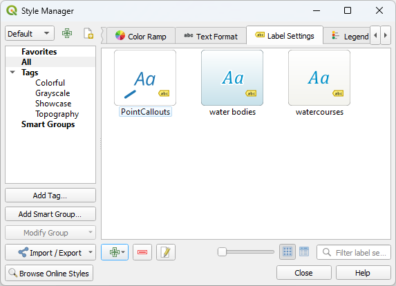

重要
翻訳は あなたが参加できる コミュニティの取り組みです。このページは現在 100.00% 翻訳されています。
14.3. ラベルの設定
ラベルは、ベクタ地物や地図に表示できるテキスト情報です。 ラベルは、シンボルのみでは表すことができない詳細情報を追加します。QGISでは、テキストに関連した2種類のアイテムが利用可能です。
テキスト形式 ： フォント、大きさ、色 、 影 、 背景 、 バッファ などのテキストの見た目を定義します。
これらはマップ上のテキスト（レイアウト/マップタイトル、地図整飾、スケールバー、...）をレンダリングするのに使用され、通常は フォント ウィジェットを通して設定できます。
テキスト形式 アイテムを作成するには、
 スタイルマネージャ ダイアログを開きます。
スタイルマネージャ ダイアログを開きます。テキスト形式 タブをアクティブにします。

図 14.23 スタイルマネージャダイアログのテキスト形式
 アイテム追加 ボタンを押します。 テキスト設定 ダイアログが開き、 設定 ができます。通常、これらのプロパティは データ定義による上書きが可能 です。
アイテム追加 ボタンを押します。 テキスト設定 ダイアログが開き、 設定 ができます。通常、これらのプロパティは データ定義による上書きが可能 です。
ラベルの設定 ：テキストの位置や、他のテキストや地物との相互関係に関連したプロパティでテキスト形式の設定を拡張します（ 引出し線付きラベル 、 配置 、 重なり、縮尺に応じた表示 、マスクグリッド ...）
これらはベクタレイヤのスマートラベリングの設定に使用され、 ベクタレイヤの レイヤプロパティ ダイアログの
 ラベル タブまたは レイヤスタイル パネル、もしくは ラベルツールバー の レイヤラベリングオプション ボタンを使用して設定できます。
ラベル タブまたは レイヤスタイル パネル、もしくは ラベルツールバー の レイヤラベリングオプション ボタンを使用して設定できます。ラベルの設定 アイテムを作成するには、
- スタイルマネージャ ダイアログを開きます。
ラベルの設定 タブをアクティブにします。
 図 14.24 スタイルマネージャダイアログのラベルの設定
- アイテム追加 メニューを押し、ラベル付けしたい地物のジオメトリタイプに応じたエントリを選択します。
ラベルの設定 ダイアログが開き、次のプロパティが表示されます。通常、これらのプロパティは データ定義による上書きが可能 です。
14.3.1. ラベルテキストの書式設定
テキスト形式 の設定と ラベルの設定 のいずれを設定する場合でも、以下のオプションがあります：
プロパティタブ |
テキスト形式 |
ラベルの設定 |
|---|---|---|
テキスト |
|
|
フォーマット |
|
|
バッファ |
|
|
マスクグリッド |
|
|
背景 |
|
|
影 |
|
|
引出し線付きラベル |
|
|
配置 |
|
|
レンダリング |
|
14.3.1.1. テキスト
図 14.25 ラベルの設定 - テキストタブ
 テキスト タブでは、次の設定を行うことができます：
テキスト タブでは、次の設定を行うことができます：
フォント ：マシンで使用可能なフォントに設定できます
スタイル:フォントの一般的なスタイルおよび、テキストの下線または取り消し線の設定ができます
サイズ は サポートされている単位 のいずれかで設定します
色
不透明度
そして HTMLフォーマットを使う ： HTML フォーマットオプションはラベルをカスタマイズするためにいくつかの HTML タグを適切にレンダリングすることを可能にします。サポートされているHTMLタグは以下の通りです：
テキスト、下線、取り消し線、上線に適用される色
フォントのプロパティ（フォントファミリ、フォントサイズ、太字、斜体）
テキスト内の上付き文字と下付き文字のコンポーネントは、テキストが縦方向に 上付き または 下付き に揃えられ、自動的に親フォントサイズの2/3のサイズになります。また、cssルールを含めることで、上付き文字/下付き文字のフォントサイズを固定にすることもできます:
<sup style="font-size:33pt">my superscript text</sup>
CSSフォーマットルール
vertical-align: superまたはvertical-align: subは、他のHTML要素（注釈、レイアウトラベル、HTMLアイテムなど）でも使用できます。
HTMLフォーマットを使用するには、 値（value） フィールドにHTMLコードを入力する必要があります。式はパースされ、サポートされている任意のHTMLタグはラベルプロパティの対応する設定を上書きします。また、HTMLタグは背景、影、バッファ等のその他のラベルプロパティと組み合わせて利用できます。
以下は、HTMLベースの式とレンダリングの例です（同じラベルに異なる色と下線を適用しています）。
format( '<span style="color:blue">%1</span> ( <span style="color:red"><u>%2 ft</u></span> )', title( lower( "Name" ) ), round($length) )

図 14.26 HTMLフォーマットを有効にしたラベル
タブの下部にあるウィジェットには スタイルマネージャデータベース 内に保存されているアイテムのリストが表示され、このリストはフィルタリング可能です。 これにより、既存のものをベースに現在のテキスト形式やラベルの設定を簡単に設定したり、新しいアイテムをスタイルデータベースに保存したりできます。保存には、 形式を保存... または 設定を保存... ボタンを押して、名前とタグを指定します。
注釈
ラベルの設定 アイテムを設定する場合、このウィジェットではテキスト形式アイテムも設定可能です。これを選択すると、現在のラベルの テキストのプロパティ を素早く上書きすることができます。同様に、そこからテキスト形式を作成/上書きすることもできます。
14.3.1.2. フォーマット

図 14.27 ラベルの設定 - フォーマットタブ
 フォーマット タブでは、次の設定を行うことができます:
フォーマット タブでは、次の設定を行うことができます:
タイプケース オプションは、テキストの大文字スタイルを変更します。テキストのレンダリング方法は以下のとおりです：
変更なし
すべて大文字
すべて小文字
タイトルのスタイル ：各単語の最初の文字を大文字に修正し、元のテキストが単一のタイプケースを使用している場合には、他の文字を小文字にします。テキストに大文字と小文字が混在している場合には、他の文字はそのままにします。
最初の文字を大文字 ：各単語の最初の文字を大文字に修正し、テキスト内の他の文字はそのままにします。
間隔 は、単語間および個々の文字間のスペースを変更します。
Stretch 率: テキストの水平方向の伸縮率を指定します。ラベルに余分なテキストを入れるためにフォントの幅を調整するのに便利です。
テキストフォントの
 カーニングを有効にする
カーニングを有効にするテキストの向き は 水平 または 垂直 を設定できます。ラベルの設定時には、 回転（Rotation-based） を設定することもできます（例： 線に平行 に配置するモードでライン地物に適切にラベル付けできます）。
混合モード オプションを使用して、ラベルとその下にある地物の混合方法を決定します（詳細は 混合モード を参照してください）。
 置換リストを適用 オプションを使用すると、地物ラベルのテキストの代わりになるテキスト（例：ストリートタイプの省略名）のリストを指定することができます。置換テキストは、マップ上にラベルを表示する際に使用されます。ユーザーは置換テキストリストのエクスポートおよびインポートにより、簡単に再利用や共有ができます。
置換リストを適用 オプションを使用すると、地物ラベルのテキストの代わりになるテキスト（例：ストリートタイプの省略名）のリストを指定することができます。置換テキストは、マップ上にラベルを表示する際に使用されます。ユーザーは置換テキストリストのエクスポートおよびインポートにより、簡単に再利用や共有ができます。複数行 の設定には以下のものがあります：
この文字でラップ処理 オプションを使用して、テキスト内で強制的に改行する文字を設定します
ラップ処理基準 オプションを使用して、理想的な自動改行サイズを指定します。このサイズは 最長行に合わせる または 最短行に合わせる とすることができます。
行の高さ: ミリメートル、 ポイント、 ピクセル、 パーセント、 インチ の値を設定することができます。行の高さがパーセントに設定されている場合、そのフォントファミリのデフォルトのテキスト行間隔のパーセントになります。通常、テキストサイズの1.2倍から1.5倍です。
整列 の書式設定： 利用可能な一般的な値は 左 、 右 、 正当化する 、 中央 です。
ポイントのラベルのプロパティを設定する場合は、テキストの整列を ラベルの配置に従う とすることもできます。この場合、テキストの整列はポイントに対するラベルの最終的な配置に依存します。例えば、ラベルがポイントの左側に配置されている場合はラベルが右揃えになり、ポイントの右側に配置されている場合には左揃えになります。
注釈
複数行 のフォーマットは、線に沿って湾曲する ラベル配置 にはまだ対応していません。この配置の場合には、このオプションは無効となります。
ラインに対するラベルの場合は、ラインの方向を決定するのに役立つ 行方向シンボル を含めることができます。このシンボルは、 左寄せ や 右寄せ を示すために使用します。特に、 配置 タブで 線に沿って湾曲 や 線に平行に配置 の配置オプションを使用する場合にはうまく機能します。シンボルの配置を設定するオプションや、
逆方向 にするオプションもあります。数値型テキストのフォーマットを設定するには、
整形された数値 オプションを使用します。 小数点以下桁数 の数値を設定できます。デフォルトでは、小数点以下 3桁です。正の数にプラス記号を表示したい場合には、 正の符号を表示 にチェックを入れます。
14.3.1.3. バッファ
図 14.28 ラベルの設定 - バッファタブ
ラベルの周りにバッファを作成するには、  バッファ タブの テキストバッファを描画 のチェックボックスをオンにします。その後、次の設定ができます。
バッファ タブの テキストバッファを描画 のチェックボックスをオンにします。その後、次の設定ができます。
バッファの サイズ は任意の サポートされている単位 で設定します。
バッファの 色 を選択します。
- カラーバッファの塗りつぶし ：バッファはラベルのアウトラインから広がるため、このオプションを有効にするとラベルの内部が塗りつぶされます。このオプションは、部分的に透明なラベルを使用する場合や、ラベルのテキストの後ろが見えるような「通常」以外の混合モードを使用している場合に関連性があります。 このオプションをオフにすると、（完全に透明なラベルを使用しているときに）輪郭のあるテキストラベルを作成することができます。
バッファの 不透明度 を定義する
継ぎ目スタイル ： Round 、 Miter または Bevel から適用できます
混合モード オプションを使用して、ラベルのバッファがマップコンポーネントとどのように混合するかを決定します（詳細については 混合モード を参照）。
- 描画エフェクト にチェックを入れると、テキストの読みやすさを向上させるための高度な
 描画エフェクト を追加します。例：アウターグローとぼかし
描画エフェクト を追加します。例：アウターグローとぼかし
14.3.1.4. 背景
 背景 タブでは、各ラベルの下に表示される図形を設定することができます。背景を追加するには、 背景を描画 のチェックボックスをオンにし、 図形 タイプを選択します。次の設定ができます：
背景 タブでは、各ラベルの下に表示される図形を設定することができます。背景を追加するには、 背景を描画 のチェックボックスをオンにし、 図形 タイプを選択します。次の設定ができます：
塗りつぶしシンボル の完全なプロパティを使用した、 四角形 、 Square 、 円 、 楕円 といった規則的な図形
ファイル、URL、またはプロジェクトやスタイルデータベースに埋め込み（ 詳細はこちら ）の SVG シンボル
あるいは、 シンボルライブラリ から作成または選択することができる マーカーシンボル 。

図 14.29 ラベルの設定 - 背景タブ
選択した図形に応じて、以下のプロパティのいくつかを設定する必要があります：
フレームの サイズタイプ には以下の選択肢があります：
一定 ： テキストのサイズとは無関係に、全てのラベルについて同じサイズを使用します
バッファ ：テキストのバウンディングボックス上のバッファ
任意の サポートされている単位 で表したフレームのX・Y方向の サイズ
背景の 回転 ： ラベルと同期 、 ラベルのオフセット 、 一定 のどれかです。後の2つは度単位の角度の設定が必要です。
オフセット量（X, Y） ：背景アイテムをX方向やY方向に移動させます
半径X, Y ：背景図形の角を丸めるための値です（四角形または正方形の図形にのみ適用されます）
背景の 不透明度
混合モード ：レンダリング時の背景と他のアイテムの混合方法の設定です（ 混合モード を参照してください）。
SVGシンボルでは、シンボルのデフォルトプロパティを使用する（ シンボルパラメータをロードする ）か、カスタムの 塗りつぶし色 、 ストローク色 および ストローク幅 を設定できます。
- 描画エフェクト ：テキストの読みやすさを向上させるための高度な 描画エフェクト を追加します。例：アウターグローとぼかし
14.3.1.5. 影
図 14.30 ラベルの設定 - 影タブ
テキストに影を追加するには、  影 タブを有効にして 影を描画 のチェックボックスをオンにします。その後、次の設定ができます。
影 タブを有効にして 影を描画 のチェックボックスをオンにします。その後、次の設定ができます。
影の対象 で、影を生成するために使用するアイテムを指定します。これには、 最下位ラベルコンポーネント 、あるいは テキスト 自体、 バッファ 、 背景 等の特定のコンポーネントを指定できます。
影の対象となるアイテムからの オフセット を設定します。これには以下の項目があります：
角度： 時計回りの角度を指定します。角度は元のアイテムの方向に依存します。
影の対象となるアイテムからのオフセット距離
オフセットの単位
グローバルシャドウを使用する のチェックボックスにチェックを入れると、角度のゼロ点は常に北向きとなり、ラベルアイテムの向きに依存しなくなります。ぼかし半径 で影の見た目に影響を与えます。数値が大きいほど、影は柔らかくなります。数値の単位は選択することができます。
影の 不透明度 を設定します
縮尺 係数を使用して、影のサイズを再スケーリングします
影の 色 を選択します
混合モード オプションを使用して、ラベルの影がマップコンポーネントとどのように混合するかを決定します（詳細については 混合モード を参照）。
14.3.2. ラベルとの相互作用の設定
上述のテキスト書式設定以外にも、ラベルや地物との相互作用を設定することができます。
14.3.2.1. マスクグリッド（Mask）
 マスクグリッド タブでは、ラベルの周りにマスク領域を定義することができます。この機能は、似たような色のシンボルとラベルが重なっていて、ラベルを見えるようにしたい場合に非常に便利です。ラベルマスクは、マスクに設定された境界内に指定された地物が描画されるのを防ぎます。例えば、指定したレイヤはラベルの2mm以内に描画しないが、別のレイヤの地物は表示できるようにラベルマスクを設定することができます。ラベルマスクは、他の地物を覆うラベルの可読性を制御できる点で、ラベルバッファと似ています。ラベルバッファは下にある地物の上に描画しますが、ラベルマスクは他のレイヤの描画を選択的に止めます。
マスクグリッド タブでは、ラベルの周りにマスク領域を定義することができます。この機能は、似たような色のシンボルとラベルが重なっていて、ラベルを見えるようにしたい場合に非常に便利です。ラベルマスクは、マスクに設定された境界内に指定された地物が描画されるのを防ぎます。例えば、指定したレイヤはラベルの2mm以内に描画しないが、別のレイヤの地物は表示できるようにラベルマスクを設定することができます。ラベルマスクは、他の地物を覆うラベルの可読性を制御できる点で、ラベルバッファと似ています。ラベルバッファは下にある地物の上に描画しますが、ラベルマスクは他のレイヤの描画を選択的に止めます。

図 14.31 ラベルの設定 - マスクグリッドタブ (テキストサンプルでは、別のレイヤが除外されていることを表す緑色の背景が表示されています)
ラベルにマスク効果を作成するには、
- タブにある マスクを有効化 チェックボックスを有効にします。
そして、以下の設定を行います
サポートされている単位 でマスクの 大きさ の設定
ラベル周囲のマスク領域の 不透明度
継ぎ目スタイル
- 描画エフェクト チェックボックスで設定する 描画効果
重なってしまうレイヤのプロパティの
マスク タブ（マスクプロパティ 参照）で、このマスク形状をマスクソースとして選択します。
14.3.2.2. 引出し線付きラベル
ごちゃごちゃしたマップにラベルを配置する際の一般的な方法は、 引出し線 を使用することです。関係する地物の外側に配置された（または遠くに移動した）ラベルは、ラベルと地物を結ぶ動的に変化する線によって識別されます。2つの終端（ラベルまたは地物）のいずれかが移動すると、コネクタの形状は再計算されます。

図 14.32 さまざまな引出し線設定によるラベル
ラベルに引出し線を追加するには、  引出し線付きラベル タブを有効にして 引出し線付きラベルを描画 のチェックボックスをオンにします。その後、次の設定ができます。
引出し線付きラベル タブを有効にして 引出し線付きラベルを描画 のチェックボックスをオンにします。その後、次の設定ができます。
コネクタの スタイル を以下の中から選びます：
直線 ：最短経路の直線
マンハッタン線 ：90° 曲がった折れ線
曲線 ：曲がった線
バルーン ：ラベルを囲み、地物を指し示す吹出し。角を丸めることもできます。
線ベースの引出し線の場合には：
線のスタイル を選択します。描画エフェクトやデータ定義の上書き設定をも含む、 ラインシンボル の全機能を使用できます。
曲線の場合には、以下の定義もできます：
つなぐ線の 曲率 のパーセンテージ
および 方向 ：ラベルから地物への方向に対して、 時計回り 、 反時計回り または 自動 （各ラベルについて適切な方向を決定する）とすることができます
引出し線の 最短長 を設定します
地物のラベルから地物の
全パートに線を描画する かどうかを指定しますラベルのアンカー位置 ：コネクタ線がラベルテキストと結合する点を制御します。選択肢は以下のとおりです。
最近傍点（Closest Point）
重心点
固定された端の位置（ 左上 、 中上 、 右上 、 中央左 、 中央右 、 左下 、 中下 、 右下 ）。
ラベルからのオフセット オプションを設定します：これは、ラベルのアンカーポイント（引出し線の開始位置）からの距離を制御します。これにより、テキストの真上に線を引かないようにできます。
バルーンの場合には、以下を設定する必要があります：
塗りつぶしスタイル 。描画エフェクトやデータ定義の設定も含め、 塗りつぶしシンボル の全機能が使えます。
吹出しの コーナー半径
ウェッジ幅 ：地物のポインタと吹出しをつなぐ部分の大きさがどれくらいか
ラベルのテキスト周囲の マージン
地物からのオフセット オプションを設定します：これは、引出し線の終端位置となる、地物（ポリゴンの場合はそのアンカーポイント）からの距離を制御します。例を挙げると、これにより地物の端の真上に線を引かないようにできます。
（ポリゴン）地物の 地物アンカーポイント （コネクタ線の終点）。選択肢は以下のとおりです。
到達不能極（境界から最も遠い点）
外殻リング上（Point on Exterior）
内部保証点（point on surface）
重心点
混合モード を設定します：引出し線の 混色 を制御します。
データで定義された配置 グループでは、引出し線の 原点 （ラベル側の位置）や 変換先 （地物側の位置）の点座標を制御することができます。また、引出し線は ラベルツールバー の  ラベル、ダイアグラム、引出し線を移動 ツールを使用して手動で制御することもできます。各引出し線の始点と終点は、この方法で移動させることができます。マウスポインタが引出し線の始点・終点付近にある場合、強調表示されます。必要に応じて、 Shift キーを押しながら移動させることもできます。これにより、引出し線の2つの点の間の角度を15度単位でスナップさせられます。
ラベル、ダイアグラム、引出し線を移動 ツールを使用して手動で制御することもできます。各引出し線の始点と終点は、この方法で移動させることができます。マウスポインタが引出し線の始点・終点付近にある場合、強調表示されます。必要に応じて、 Shift キーを押しながら移動させることもできます。これにより、引出し線の2つの点の間の角度を15度単位でスナップさせられます。
14.3.2.3. 配置
ラベルの配置やラベル付けの優先度を設定するには、  配置 タブを選択します。配置オプションはベクタレイヤの種類、すなわちポイント、ライン、ポリゴンによって異なり、グローバルな 自動配置設定 の影響を受けることに注意してください。
配置 タブを選択します。配置オプションはベクタレイヤの種類、すなわちポイント、ライン、ポリゴンによって異なり、グローバルな 自動配置設定 の影響を受けることに注意してください。
ポイントレイヤのラベルの配置
ポイントラベルの配置モードには、以下のものがあります
カルトグラフィックに配置 ：ポイントラベルは以下の理想的なカルトグラフィック配置ルールに従い、ポイント地物とより良い視覚的関係性で生成されます。ラベルは、
サポートされている単位 で設定された 距離 に配置することができます。距離の基準は、ポイント地物自体から、もしくは地物を表すシンボルからの距離です（ オフセット距離の基準 で設定）。後者のオプションはシンボルサイズが固定されていない場合、例えばサイズがデータによって定義されている場合や、 カテゴリ値による定義 レンダラで様々なシンボルを使用している場合に特に有用です。
配置の優先度 に従って配置することができます。優先度は、データ定義の優先位置リストを使用して、個別の地物に対してカスタマイズまたは設定することができます。これにより、特定の配置だけを使用することもできますので、例えば、海岸線の地物はラベルが陸側に配置されないようにできます。
デフォルトでは、カルトグラフィックモードの配置は以下の順序で優先されます（ Krygier and Wood (2011)によるガイドライン や他の地図製作学のテキストを尊重しています）：
右上
左上
右下
左下
右
左
わずかに右寄りの上
わずかに左寄りの下
ポイントの周り ：ラベルは、地物を中心とした等しい半径（ 距離 で設定）の円に配置します。配置の優先順位は「右上」から時計回りです。ラベルの位置はデータ定義の 配置する象限 オプションを使用して制限することもできます。
点からのオフセット ：ラベルはポイント地物から オフセット量（X, Y） 離れた位置に配置されます。オフセット量はさまざまな単位で設定でき、望むならば地物の上に重ねることもできます。データで定義された 配置する象限 を使用して配置を制限することができ、ラベルの 回転 を設定することもできます。
ラインレイヤのラベルの配置
ラインレイヤのラベルモードには、以下のものがあります：
線に平行に配置 ：地物を表現する一般化されたラインに平行にラベルを描画します。ラベルの位置はラインで直線的な部分が優先されます。以下の設定を定義できます。
許容される位置 ： 線の上（Above line） 、 線上 、 線の下（Below line） そして 線の方向に応じた位置 （ラベルをラインの左または右に配置します）が設定できます。複数のオプションを同時に設定することも可能です。この場合には、QGISは最適なラベル位置を探します。
ラベルとラインの間の 距離
線に沿って湾曲 ライン地物の曲がりに沿ってラベルを描画します。 線に平行に配置 モードで利用可能なパラメータに加えて、内側や外側の 湾曲表示の場合の文字間最大角度 を設定することができます。
水平 ：ラベルを水平に描画します。

図 14.33 ラインレイヤのラベル配置例
配置モードの設定のほかに、以下の設定ができます：
反復 地物の長さに沿って複数回ラベルを表示するときの 距離 。この間隔の単位は
ミリメートル、ポイント、ピクセル、縮尺済みメートル（Meters at Scale）、地図単位、インチで入力できます。はみ出し距離 距離 （水平モードでは利用不可）：ラベルがライン地物の終端（または始端）をはみ出す距離の最大許容値を指定します。この値を大きくすると、短いラベル地物でもラベルを表示できるようになります。
ラベルのアンカー ：ラベルが参照するライン地物に沿ったラベルの配置を制御します。 設定... をクリックして、以下を選択します：
ラベルを近くに配置する、ラインに沿った位置（の比率）。データで定義することもでき、可能な値は以下のとおりです：
 線の中央
線の中央 線の始点
線の始点 線の終点
線の終点または、
 カスタム...
カスタム...
切り抜き（Clipping） ：ラインへのラベルの配置をどのように計算するかを決定します。デフォルトではラインの可視範囲のみを使用しますが、より一貫した結果を得るために、ライン全体を使用することもできます。
アンカーポイント: テキストのどの部分(開始、中央、終了)をアンカーポイントに合わせるかを制御します。自動 アンカーを使用すると、以下のようになります：
ラインの始点付近（0-25%）にアンカーしたラベルの場合、アンカー位置はラベルテキストの 冒頭 となります
ラインの終点付近 (75-100%) にアンカーしたラベルの場合、アンカー位置はラベルテキストの 末尾 となります
ラインの中央付近 (25-75%) にアンカーしたラベルの場合、アンカー位置はラベルテキストの 中央 になります
配置方針 ： 配置の際に優先するヒント を使用すると、ラベルのアンカーは単にラベル配置のヒントとして扱われます。 厳格 を選択すると、ラベルは厳密にラベルアンカーの位置に配置されます。
ポリゴンレイヤのラベルの配置
ポリゴンレイヤのラベル配置は、以下のモードの中から一つ選ぶことができます：
図 14.34 ポリゴンレイヤのラベル配置例
重心からのオフセット ：ラベルは地物の重心上、または重心から固定値で オフセット量（X, Y） だけ離れた距離（ サポートされている単位 での値）に配置されます。参照する重心点は、マップキャンバスに描画されている部分に基づいた重心（ ポリゴンの可視部分 ）か、または、見えているかどうかに関係なく ポリゴンの全体 に基づいた重心により決定されます。また、以下の設定もあります：
重心点をポリゴンの内側に強制移動する
ラベルを特定の象限に配置する
回転を指定する
ポリゴンの外側にラベルを配置することを許可 にチェックを入れると、ラベルをポリゴン内部に配置できない場合には外側に配置します。データ定義のプロパティを使用すると、ラベルの外側配置の許可、不許可、強制を地物ごとに設定することが可能になります。
重心の周り（Around Centroid） ：ラベルは重心の周りのあらかじめ設定された距離内に配置されます。配置位置は重心位置が優先されます。このモードでも、重心は ポリゴンの可視部分 か ポリゴンの全体 のどちらとするかを定義したり、重心点をポリゴンの内側に強制移動したりすることができます。
水平 ：ポリゴン内部の最適な場所に水平なラベルを配置します。ポリゴンの端からより遠い場所が優先されます。 ポリゴンの外側にラベルを配置することを許可 することもできます。
自由（回転） ：ポリゴン内部の最適な場所に回転させたラベルを配置します。ラベルの回転はポリゴンの向きに応じて決められ、ポリゴンの端からより遠い場所への配置が優先されます。 ポリゴンの外側にラベルを配置することを許可 することもできます。
周辺を利用（Using Perimeter） ：ポリゴン境界を表現する一般化されたラインに平行にラベルを描画します。ラベルの位置は周辺のラインの中で直線的な部分が優先されます。以下の設定を定義できます。
許容される位置 ： 線の上（Above line） 、 線上 、 線の下（Below line） そして 線の方向に応じた位置 （ラベルをポリゴンの境界の左または右に配置します）が設定できます。複数のオプションを同時に設定することも可能です。この場合には、QGISは最適なラベル位置を探します。
ラベルとポリゴンの境界の間の 距離
反復 ポリゴン周囲の長さに沿って複数回ラベルを表示するときの 距離 。
周辺を利用する（湾曲） ：ポリゴン境界の湾曲に沿ってラベルを描画します。 周辺を利用 モードで利用可能なパラメータに加えて、内側や外側の 湾曲表示の場合の文字間最大角度 を設定することができます。
ポリゴンの外側 ：常にポリゴンの外側の 距離 分離れた位置にラベルを配置します
共通の配置設定
ラベル配置の設定の一部は、すべてのレイヤジオメトリタイプで利用できます:
ジオメトリジェネレータ
ジオメトリジェネレータ のセクションを使用すると、ユーザーはラベルのレンダリングに使用される基礎となるジオメトリを 式 を使用して変更することができます。これは、ジオメトリを動的に変位させたり、別のジオメトリ（タイプ）に変換するのに便利です。
ジオメトリジェネレータを使用するには：
- ジオメトリジェネレータ のオプションをチェックします
依拠するジオメトリを生成する式を入力します
関連がある場合には、式のアウトプットのジオメトリタイプを選択します。ラベルの配置やレンダリングといった、ジオメトリに基づいたラベルの設定は、新しいジオメトリタイプの機能に合うように更新されます。
以下のような使用例があります：
"label_position" という別のフィールドに保存されたジオメトリを使用する
シンボロジの設定で 生成されたジオメトリ をラベル配置にも使用する
@map_scale 変数を使用して、距離やサイズの計算をズームレベルとは独立とする
湾曲配置モードと組み合わせて、ポイント地物の周囲に丸くラベルを作成する:
exterior_ring(make_circle($geometry, 20))
ライン地物の始点と終点にラベルを追加する:
collect_geometries( start_point($geometry), end_point($geometry) )
河川をスムージングしたラインに依存させることで、ラベルの配置空間を増やす:
smooth( $geometry, iterations:=30, offset:=0.25, min_length:=10 )
データによる定義
データによる定義 グループでは、地物ごとにラベルの配置を直接に制御することができます。これは地物の属性や、設定する式に依存しています。
X 、 Y 座標
設定したカスタム位置におけるテキストの整列方法
水平方向 ： Left 、 Center 、 Right のいずれかの値をとります
垂直方向 ： Bottom 、 Base 、 Half 、 Cap 、 Top のいずれかの値をとります
テキストの 回転 。ラベルの回転はさまざまな単位（例えば
degrees、弧の分、turnsなど）で定義できます。フィールドに関連付けられた回転の値を保持し、この回転量をラベルに適用したい場合には、ラベルの固定に無関係に 回転量をプロジェクトに保存 エントリにチェックを入れてください。チェックを入れない場合には、ラベルの固定を開放すると回転量はリセットされ、値は属性テーブルからクリアされます。注釈
ポリゴン地物に対するデータ定義の回転は現在のところ、 重心の周り 配置モードでのみサポートしています。
優先度
優先度 セクションでは、各ラベルの配置優先度を定義することができます。すなわち、同じ場所に異なるダイアグラムやラベルの候補がある場合、優先度の高い項目が表示され、他の項目は省略されます。
優先度ランクは、より大きな重みづけを持つ 地物との衝突回避 によってラベルが省略されるかどうかを評価するためにも使用されます。
衝突回避
一部の状況（例：密なラベル、地物が重複する場合）では、無関係な地物の上にラベルが配置されてしまうことがあります。
衝突回避は、他の地物のラベルやダイアグラムを配置してしまわないようにするためのQGISの機能です。これは、 衝突回避 セクションでコントロールすることができます。
- 地物と衝突回避 オプションを有効にすると、レイヤの地物が任意のラベルやダイアグラムに対して（同じレイヤ内の他の地物のラベルやダイアグラムも含め）障害物として振る舞うようになります。
このオプションの横にある
 データによって定義された上書き コントロールを使用することで、レイヤ全体を対象とするのではなく、一部の地物を選択して障害物として使用することができます。
データによって定義された上書き コントロールを使用することで、レイヤ全体を対象とするのではなく、一部の地物を選択して障害物として使用することができます。 設定 ボタンを押すと、障害物の重みづけを調整できます。
障害物となる可能性のある地物すべてに対する 衝突回避のウェイト ：任意の ラベル や ダイアグラム のうち、配置優先度ランクがこのウェイトよりも大きいものは、上に配置することができます。ランクの低いラベルやダイアグラムは、他に可能な配置がない場合には省略されます。
この重みづけもデータ定義することができ、同じレイヤ内でも、ある地物は他の地物に比べてより重複しやすくするといったことができます。
ポリゴンレイヤでは、地物の障害物の種類を選択できます。
地物の内側 ：ポリゴンの内部にラベルを配置しないようにします（ポリゴンの完全に外側か、わずかに内側に入った位置に配置することを優先します）。
地物の輪郭 ：ポリゴンの境界線上にラベルを配置することを避けます（ポリゴンの外側または完全に内側にラベルを配置することを優先します）。これは、地物が全域をカバーしているようなレイヤ（行政単位、カテゴリの範囲など...）の場合に便利です。この場合、これらの地物の内部にラベルを配置するのは不可避であり、地物間の境界にラベルを配置することを避ける方がはるかに見た目が良くなります。
14.3.2.4. レンダリング
 レンダリング タブでは、ラベルがどの状態の時に表示されるかや、他のラベルや地物との相互作用について調整することができます。
レンダリング タブでは、ラベルがどの状態の時に表示されるかや、他のラベルや地物との相互作用について調整することができます。
ラベルオプション
ラベルオプション では、以下の設定ができます：
縮尺に応じた表示設定 や、 ピクセルに応じた表示設定（地図単位） があります。
ラベルのz-index は、他のレイヤからのラベルと同様に、レイヤ内の他の地物ラベルとの関係性でラベルがレンダリングされる順番を（データ定義の上書き式を使用して）決定します。z-index が高いラベルは、（任意のレイヤの）z-index の低いラベルよりも上にレンダリングされます。
さらに、2つのラベルが同じz-index の場合に対するロジックが以下のように調整されています：
2つのラベルが同じレイヤのものである場合、小さいラベルが大きいラベルの上に描画されます
2つのラベルが異なるレイヤのものである場合、ラベルはレイヤ自体の順序と同じように描画されます（つまり、マップ凡例の順序設定を尊重します）
注釈
この設定は、ラベルを他のレイヤの地物の下に描画するのではありません。すべてのレイヤの地物の上にラベルを描画する順序を制御するだけです。
内部配置を許可： デフォルトでは、QGISは設定に従って最適な配置でラベルをレンダリングしようとします。 このモードにチェックを入れると、他に選択肢がない場合に、機能がより悪い配置オプションにフォールバックすることを許します。例えば、線が短すぎてカーブしたラベルテキストが入らない場合、ラベルを地物の中心点のすぐ上に水平に配置することができます。
表示 および 常に表示するか否かを示す式 にデータによる定義式を使用して、どのラベルをレンダリングするかを細かく調整することができます。
逆さま表示 を許可するか：選択肢は 禁止 、 回転を定義した場合のみ 、 常に です。
重なったラベル グループでは、レイヤにある地物のラベルに重なりを許すかどうか、またそれぞれのラベルをどのように扱うかを制御できます：
重なりを禁止する: いくつかのラベルが無くなっても、決してレイヤに重なったラベルを配置しません
必要ならば重なりを許可する: ラベルを配置できない場合、重なったラベルを描画します。このモードでは、可能であればラベルをあまり理想的でない配置に移動します。例えば、ラベルをラインやポリゴンの中心から遠くに移動させるなど、そうすることでラベルの重なりを避けることができる場合です。しかし、他に可能な位置がなければ、ラベルは重なって描画されます。
重なりを許容する: ラベルが他のラベルや障害物に重なっても全く構わずに行われ、重なりを完全に避ける別の配置が可能であっても、常に最良の配置（例えば最も中央の配置）が使われます。
重なったラベルとフォールバック配置オプションの両方を許可することで、レイヤ内のすべての地物がラベル付けされることが保証されます... 必ずしも最高のレンダリングとは限りませんが！
地物オプション
地物オプション では、以下の設定ができます：
マルチパートの各パートに表示 するかどうかや、 ラベル付けする地物の数を制限 するかを選択できます。
ラインレイヤとポリゴンレイヤには、 これより地物が小さい場合は省略 を使用して、ラベル付けをする地物の最小サイズを設定するオプションがあります。
ポリゴン地物については、ラベルが地物の中に完全に収まるか否かによって表示するラベルをフィルタリングすることもできます。
ライン地物については、 重複ラベルを除去するために接続する線を結合 を選択でき、 配置 タブの 距離 や 反復表示の間隔 オプションと組み合わせると、非常にすっきりしたマップをレンダリングできます。